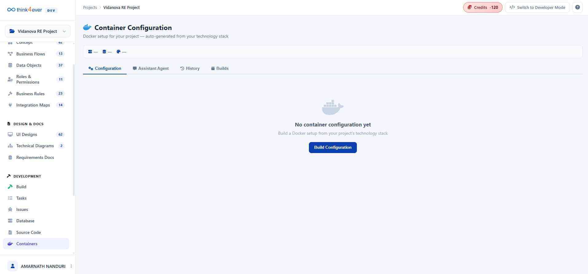

Containers
The Containers module is where your application transitions from a collection of files into a portable, production-ready system. By leveraging Docker, Think4ever AI ensures that your project — runs identically on your local machine, a staging server, or the cloud.

There are four powerful tabs:
| Tab | What it enables |
|---|---|
| Configuration | View your docker-compose.yml file. Toggle to Visual Mode to see your servers as interactive cards. |
| Assistant Agent | Don't like a setting? Just tell the AI: "Change the database port to 3306" or "Add a backup service." |
| History | A "Time Machine" for your infrastructure. If a change breaks the build, roll back to a previous version instantly. |
| Builds | The final step. Download as ZIP for your local machine or Push to Source to add it to your project files. |